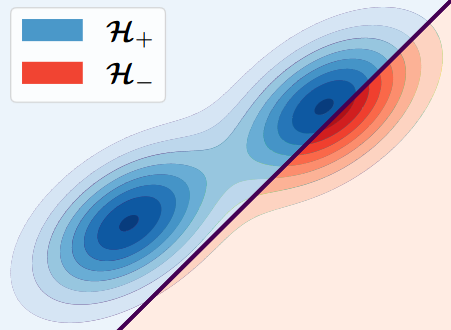
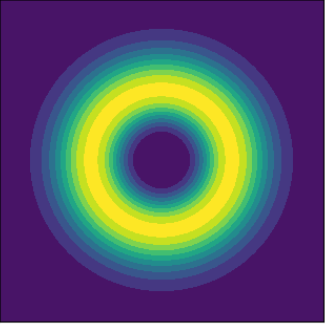

Research interests
I’m interested in understanding when and why (!) approximate inference can be provably reliable. My main goal is to develop abstractions that shed light on the behavior of approximate inference and can inspire better solutions in practice. My current research focuses on variational inference, but I’m broadly interested in optimization, identifiability, information geometry, and obscure families of distributions!
Selected publications


How to approximate inference with subtractive mixture models · AISTATS 2026
Lena Zellinger, Nicola Branchini, Lennert De Smet,
Víctor Elvira, Nikolay Malkin, Antonio Vergari
Lena Zellinger, Nicola Branchini, Lennert De Smet,
Víctor Elvira, Nikolay Malkin, Antonio Vergari